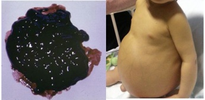
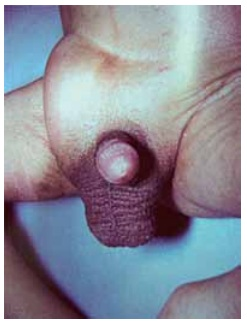
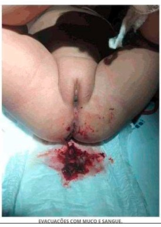
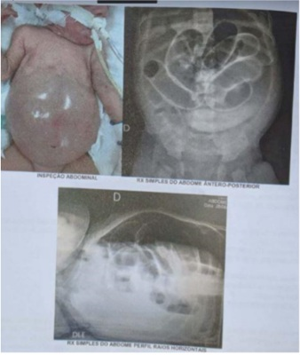
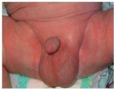
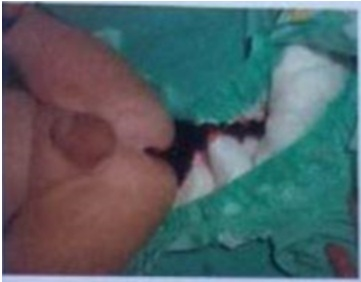
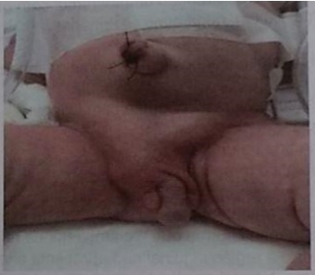
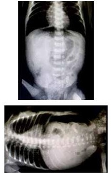

Questão 1 · Atresia da Via Biliar · Cirurgia · 4000184077Paciente de 10 meses, sexo masculino, portador de atresia de vias biliares com portoenterostomia prévia, porém sem melhora significativa da drenagem biliar, foi trazido ao departamento de emergência por ter apresentado três episódios de fezes muito escuras e malcheirosas (Figura A). O responsável também notou que o lactente está mais irritado e com aumento do volume abdominal. Nega febre ou outros sintomas associados. Ao exame clínico, regular estado geral, descorado, ictérico. FC 130 bpm, FAR 48 irpm, PA 82x56 mmHg, pulsos amplos, tempo de enchimento capilar inferior a 1 segundo. Ausculta cardíaca e pulmonar sem alterações, abdome com percussão maciça, tenso e distendido, conforme imagem. Além de jejum e antibiótico, indique a conduta imediata indicada para a complicação apresentada.

A Realizar shunt portossistêmico transjugular.
B Iniciar infusão de vasoconstritor esplâncnico.
C Expandir com soro fisiológico 40–60 mL/kg.
D Remover aderências por cirurgia laparoscópica.
Questão 2 · Patogênese e Apresentação Clínica · Pediatria · 4000183465Diante de uma suspeita clínica de Estenose Hipertró ca do Piloro, qual alternativa abaixo apresenta marcador(es) que é(são) altamente sugestivo(s) de tal patologia?
A Hiponatremia e hipercalemia
B Hiperglicemia e acidose metabólica
C Hipoglicemia e acidose metabólica
D Alcalose metabólica hipoclorêmica
E Acidose metabólica, hiponatremia e hipercalemi
Revisar: possível letra faltando em enunciado
Questão 3 · Estenose Hipertróf ica do Piloro · Pediatria · 4000182986Sobre a estenose hipertrófica do piloro, é correto afirmar que
A os pacientes apresentam vômitos biliosos.
B o US abdominal apresenta alta sensibilidade diagnóstica.
C o tratamento cirúrgico é uma emergência.
D a correção do distúrbio hidreletrolítico é realizada na fase pós-operatória.
Questão 4 · Atresia de vias biliares · Tratamento · Atresia da Via Biliar · 4000182108Paciente com 6 meses, apresenta história de icterícia, colúria e acolia desde um mês de idade. Apresenta bom desenvolvimento pondero estatural, sendo alimentada por aleijamento materno e papas. Exame físico: ictérico ++/4, fígado a 3 cm do rebordo costal direito, rme; baço a 2 cm do rebordo costal esquerdo. Exames laboratoriais: bilirrubinas totais = 7,3 mg/dL; bilirrubina direita = 5,1 mg/dl; TGO = 245 U/L (Valor de referência [VR] <31); TGP = 295 U/L (VR < 31); GamaGT = 400 U/L (VR < 50); INR -= 1,5 (VR < 1,3); albumina = 3,0 g/dl (VR: 3,5-5). Ultrassom abdominal: fígado com bordas rombas, contornos lobuladosm , aumento difuso da ecogenicidade; presença de massa brosa de forma triangular situada na porção cranial da bifurcação da meia porta; esplenomegalia. Biópsia hepática percutânea: brose moderada, com septos e nódulos; proliferação de ductos biliares e frequentes lagos biliares. Com base no seu principal diagnóstico etiológico, qual a melhor opção para esta criança?
A Colangiografia intraoperatória.
B Colangiografia endoscópica retrógrada.
C Transplante hepático.
D Cirurgia de Kasai.
Questão 5 · Cistos do Colédoco · Cirurgia · 4000173539Homem, 19 anos. Dor em hipocôndrio direito, febre ocasional com icterícia uma colangioressonância que evidencia um cisto de colédoco tipo III (coledococele). Qual o tratamento de escolha?
A Ressecção com coledocoduodenostomia
B Papilotomia endoscópica
C Cirurgia de Whipple
D Hepaticojejunostomia
E Drenagem biliar externa
Questão 6 · Apendicite Aguda · Apendicite Aguda · Cirurgia · 4000170064Menina de 3 anos tem dor abdominal há 3 dias, mais localizada em andar inferior. Há 2 dias apresenta episódios de vômitos esverdeados, inapetência e picos febris (38,5 ºC). Há 1 dia apresenta episódios de diarreia líquida. Exame físico: REG, desidratada 2+/4, irritada. Abdome: RHA diminuídos, dor difusa à palpação profunda, com reação peritoneal em hipogástrio. Hemograma: 14.000 glóbulos brancos, sem desvio. Raio-X de abdome, conforme a imagem. O diagnóstico e a conduta são:

A gastroenterocolite aguda; hidratação e coleta de coprograma e coprocultura.
B apendicite aguda; apendicectomia.
C pielonefrite aguda; TC de rins e vias urinárias.
D abdome agudo obstrutivo por ingestão de corpo estranho; laparotomia exploradora.
Questão 7 · Persistência do Conduto Peritôniovaginal Patente · Cirurgia · 4000170063Menino de 4 meses apresenta choro intenso há 2 horas. Mãe relata última mamada há 30 minutos. Nega vômitos e febre e refere que a última evacuação ocorreu há 3 horas. Exame físico: BEG, ativo, bastante irritado e choroso. Abdome: normotenso, RHA presentes, sem sinais de reação peritoneal. Presença de abaulamento xo em FID (conforme a imagem). Testículos tópicos bilateralmente. O diagnóstico é hérnia inguinal direita

A estrangulada, necessitando de herniorrafia imediatamente.
B encarcerada, e deve-se realizar tentativa de redução manual.
C devendo-se agendar consulta ambulatorial com especialista.
D encarcerada, e deve-se realizar herniorrafia imediatamente.
Questão 8 · Estenose Hipertróf ica do Piloro · Cirurgia · 4000169498Lactente de um mês de vida, sexo masculino, vem à consulta por apresentar vômitos frequentes após as mamadas. Sintomatologia teria se intensi cado nesta última semana. Permanece ativo, apirético, com a sensação referida pela mãe de que quer continuar se alimentando, mesmo após o vômito. Perdeu peso nas últimas duas semanas. Pediatra encaminha para o hospital com hipótese de estenose hipertró ca de piloro. Alinhada a essa possibilidade, qual das anormalidades descritas abaixo é esperada na gasometria arterial?
A Acidose metabólica hipoclorêmica.
B Acidose metabólica hiperclorêmica.
C Alcalose metabólica hipoclorêmica.
D Alcalose metabólica hiperclorêmica.
Revisar: possível letra faltando em enunciado
Questão 9 · Cirurgia · Hérnia Inguinal · 4000167363Menina, 3 meses, é trazida para Unidade de Emergência por choro incoercível e inchaço em região das virilhas. Exame físico: abaulamento irredutível bilateralmente em região inguinal. A ESTRUTURA MAIS PROVÁVEL PRESENTE NO ABAULAMENTO É:
A Intestino delgado.
B Ovário.
C Cólon.
D Epíplon.
Questão 10 · Divertículo de Meckel · Cirurgia · 4000166444Uma doença congênita que pode causar obstrução intestinal, hemorragia digestiva, abdome agudo inflamatório ou perfurativo na criança é:
A linfoma de Burkitt.
B divertículo de Meckel.
C cloaca.
D onfalocele.
Questão 11 · Cirurgia · Hérnia Inguinal · 4000166443A hérnia inguinal pediátrica deve ser:
A corrigida cirurgicamente, para a ligadura do saco herniário derivado do conduto peritônio-vaginal.
B tratada com injeção de substâncias esclerosantes no saco herniário.
C observada com o crescimento da criança, pois tende a se fechar espontaneamente.
D operada para reparo da parede muscular e/ou implante de uma tela no defeito herniário.
Questão 12 · Intussuscepção Intestinal · Cirurgia · 4000166234Criança, 9 meses de idade, sexo masculino, previamente saudável, é admitido no PS em bom estado geral, com história de choro intenso com períodos de acalmia sugestivos de dor abdominal em cólica e vômitos. Após algumas horas, apresentou distensão abdominal e evacuação com muco sanguinolento. Assinale a alternativa correta.
A Solicitar colonoscopia de urgência devido ao sangramento intestinal.
B A causa mais frequente é o divertículo de Meckel com mucosa gástrica ectópica.
C A ultrassonografia pode ser usada para o diagnóstico e tratamento.
D Há indicação cirúrgica após exames pré-operatórios e estabilização clínica.
Questão 13 · Enterocolite Necrosante · 4000166232Recém-nascido, 2 dias de vida, sexo masculino, prematuro de 30 semanas, pesando 1500 gramas, internado na UTI Neonatal, apresenta taquicardia, distensão abdominal e evacuação de fezes sanguinolentas após a introdução de dieta com leite materno exclusivo. Exame físico: abdômen distendido, com pele brilhante, hiperemia periumbilical e doloroso à palpação. O diagnóstico mais provável e o tratamento mais adequado são, respectivamente:
A enterocolite necrotizante; jejum, sonda nasogástrica aberta e antibioticoterapia.
B alergia à proteína do leite; introdução de dieta isenta de lactose.
C alergia à proteína do leite; monitorização da pressão intra-abdominal.
D enterocolite necrotizante; cirurgia precoce: estomias e drenagem abdominal.
Questão 14 · Principais Af ecções Cirúrgicas Abdominais Adquiridas do Lactente · Cirurgia · 4000165263Criança de 5 meses de idade (sexo feminino) é conduzida pela mãe ao PS de pediatria com quadro de vômitos e dor abdominal há 24 horas. HPMA: há 24 horas, 1 episódio de vômito em jato. Cerca de 1 hora após o episódio inicial, passou a apresentar dor de forte intensidade, periódica, a intervalos cada vez mais curtos e de intensidade crescente, curvando o corpo ventralmente durante esses episódios, caracterizados como cólicas. Logo após os primeiros episódios, apresentou eliminação de secreção mucossanguinolenta pelo ânus. Refere febre de 38,2 ºC, ao chegar a este serviço. Nasceu de parto normal a termo e apresenta crescimento e desenvolvimento normais, sem antecedentes mórbidos. Exame físico geral: descorado, desidratado, T = 38,2 ºC, FC = 140 bpm; abdome distendido com massa palpável no hipocôndrio direito, alongada como um chouriço. Não se palpam alças intestinais na fossa ilíaca direita (vazia?), palpando-se a parede abdominal posterior. Discretos sinais de resistência à palpação abdominal. Eliminou novamente secreção mucossanguinolenta pelo ânus. Considerando esse quadro, assinale a alternativa que apresenta o diagnóstico e a conduta a ser tomada.
A Divertículo de Meckel – laparotomia e diverticulectomia.
B Invaginação intestinal – redução hidrostática acompanhada de ultrassom.
C Vício de rotação com volvo – videolaparoscopia.
D Enterite necrotizante – colostomia em alça.
E Estenose hipertrófica de piloro – dilatação endoscópica.
Questão 15 · Patogênese e Apresentação Clínica · Estenose Hipertróf ica do Piloro · Diagnóstico · 4000165097Lactente masculino de um mês e meio com vômitos não biliosos após mamadas há uma semana, pior na última semana. Nega febre ou diarreia, mamando vorazmente ao seio materno. Sobre esta situação selecione a opção correta. I – Geralmente a alteração não está presente desde o nascimento. II – Esperamos laboratorialmente a presença de acidose metabólica. III – O melhor exame para confirmar o diagnóstico é a ultrassonografia.
A As afirmativas I e II são verdadeiras. A afirmativa III é falsa.
B As afirmativas I e III são verdadeiras. A afirmativa II é falsa.
C As afirmativas II e III são verdadeiras. A afirmativa I é falsa.
D As afirmativas I, II e III são verdadeiras.
E As afirmativas I, II e III são falsas.
Questão 16 · Apendicite Aguda · 4000165096A apendicite aguda continua a ser o quadro cirúrgico agudo mais comum em crianças e a principal causa de morbidade infantil. Sobre a apendicite aguda na infância assinale a opção correta. I – A tomografia de abdome em nosso meio tem sido o exame de escolha para confirmação diagnóstica. II – A cirurgia de emergência (no meio da noite) raramente é indicada e a maioria dos pacientes necessita de medidas de suporte pré-operatório para estabilizar os sinais vitais e garantir a segurança do procedimento. III – Em pacientes nos quais a perfuração é identi cada no momento do diagnóstico, a cirurgia é ainda menos urgente e a conduta pré-operatória apropriada é mais crítica.
A As afirmativas I e II são verdadeiras. A afirmativa III é falsa.
B As afirmativas I e III são verdadeiras. A afirmativa II é falsa.
C As afirmativas II e III são verdadeiras. A afirmativa I é falsa.
D As afirmativas I, II e III são verdadeiras.
E As afirmativas I, II e III são falsas.
Questão 17 · Estenose Hipertróf ica do Piloro · Cirurgia · 4000164245Menina de 45 dias de vida, previamente saudável, amamentação com leite materno exclusivo, com história de vômitos logo após as mamadas, com inicio há 1 semana, de conteúdo de leite talhado. A mãe relata que tem percebido que a criança vomita praticamente todo leite ingerido nos últimos 2 dias e que não está ganhando peso. A criança evacua diariamente, mas em pequena quantidade. O pediatra orientou medidas posturais e dietéticas e prescreveu domperidona, sem resposta. Qual o diagnóstico mais provável?
A Estenose hipertrófica do piloro.
B Alergia a proteína do leite de vaca.
C Má rotação intestinal.
D Refluxo gastroesofágico.
Questão 18 · Persistência do Conduto Peritôniovaginal Patente · Cirurgia · 4000164229Menino de 1 ano e 2 meses de idade, com história de abaulamento inguinal esquerdo, indolor, notado pela mãe há 20 dias, durante o banho. Na palpação, nota-se tumoração tensa, não dolorosa, irredutível, em canal inguinal esquerdo. Qual o provável diagnóstico?
A Hidrocele comunicante.
B Adenomegalia reacional.
C Cisto de cordão espermático.
D Hérnia inguinal.
Questão 19 · Hérnia Umbilical · Persistência do Conduto Peritôniovaginal Patente · Cirurgia · 4000164099Sobre as hérnias inguinais e umbilicais na infância, é correto afirmar que hérnia do tipo:
A inguinal deve ser tratada cirurgicamente
B inguinal tem menor risco de encarceramento
C umbilical não se resolve espontaneamente na maioria das vezes
D umbilical >2cm tem indicação absoluta de abordagem cirúrgica
Questão 20 · Cirurgia Inf antil · Pediatria · Tratamento · 4000146044Lactente, menino, 4 meses de idade, com antecedente de prematuridade de 35 semanas, em consulta pediátrica devido ao aumento de volume na região do testículo direito, quando chora. Não apresenta febre, dor ou mudança de coloração no local. Ao exame clínico: bom estado geral, presença de abaulamento em região escrotal direita, mais evidente durante exão do tronco sobre o abdome. À palpação, notam-se testículos tópicos, com abaulamento redutível em bolsa escrotal direita e espessamento do cordão espermático. Restante do exame físico sem alterações. Qual é o diagnóstico e a conduta para o caso?
A Hidrocele não comunicante. Aguardar resolução espontânea.
B Hérnia inguinal. Indicar cirurgia.
C Hidrocele comunicante. Indicar cirurgia após 6 meses de idade.
D Cisto de cordão. Aguardar resolução espontânea.
Questão 21 · Estenose Hipertróf ica do Piloro · Cirurgia · 4000145978Lactente do sexo masculino com 25 dias de vida evolui com vômitos pósalimentares, não biliosos, de repetição e com piora progressiva. Ao exame físico, encontra-se desidratado e choroso, apresentando espessamento palpável em região epigástrica. Aponte o principal diagnóstico:
A Doença do refluxo gastresofágico
B Atresia duodenal
C Atresia pilórica
D Estenose hipertrófica de piloro
Questão 22 · Hidrocele Comunicante e Cistos de Cordão · Cirurgia · Hipospádia · 4000145514Qual das afecções abaixo NÃO É INDICAÇÃO de cirurgia à época do diagnóstico?
A Hérnia inguinal
B Hidrocele comunicante
C Hipospádia
D Testículo ectópico
Questão 23 · Diagnóstico · 4000144231Lactente de 6 meses, sexo masculino, foi admitido na unidade de pronto-atendimento com história de dor abdominal em cólicas, intensa, com período de acalmia. Nega antecedentes mórbidos. Associado à dor, refere vômitos, palidez e sudorese fria de extremidades. Ao exame físico: regular estado geral, com dor na ocasião do exame, afebril. Abdome globoso, discreto timpanismo à percussão, ruídos hidra aéreos com timbre metálico, sem sinais de irritação peritoneal. Sinal de Dance positivo. Na fralda, há evacuações com muco e sangue (vide figura). Qual a conduta mais adequada?

A Enema opaco.
B Colonoscopia.
C Laparotomia.
D Observação.
Questão 24 · Etiopatogênese · Pediatria · Enterocolite Necrosante · 4000142165Quanto à enterocolite necrosante na cirurgia pediátrica, assinale a alternativa correta.
A É a emergência cirúrgica do trato gastrointestinal mais comum no período neonatal.
B O tratamento é sempre cirúrgico.
C O principal fator de risco é a infeção no trato gastrointestinal.
D Somente 20% dos casos se manifestam no primeiro mês de vida.
E A enterocolite necrosante neonatal é a segunda causa mais comum de síndrome do intestino curto.
Questão 25 · Cistos do Colédoco · Cirurgia · 4000141788O cisto de colédoco é uma doença congênita, associada a dilatações extra e/ou intra-hepáticas da árvore biliar. São, respectivamente, a fisiopatologia e a principal consequência tardia dessa doença:
A bile litogênica e cirrose biliar primária.
B confluência biliopancreática anômala e colangiocarcinoma.
C disfunção do esfíncter de Oddi e biliopatia portal.
D pancreas divisum
E pancreatite cefálica e cirrose biliar.
Questão 28 · Tratamento · 4000140793Neonato prematuro com idade gestacional de 30 semanas e peso de nascimento de 1.200g apresenta no quarto dia de vida quadro de hipoatividade, vômitos biliosos e distensão abdominal importante. Estava extubado, sem droga vasoativa, com boa perfusão periférica e diurese. Houve ainda evacuação com pequena quantidade de sangue. O exame abdominal revelava abdome distendido e doloroso à palpação, com discreta hiperemia periumbilical. Foi então submetido a uma radiografia de abdome que revelou a seguinte imagem: A conduta mais adequada neste momento seria:

A Indicar uma laparotomia exploradora.
B Realizar uma tomografia de abdome.
C Repetir a radiografia de abdome em 6 horas.
D Iniciar jejum, antibioticoterapia de largo espectro e observar a evolução.
Questão 29 · Atresia da Via Biliar · Gastroenterologia · 4000139877Paciente de 50 dias, do sexo feminino, é avaliada por queixa de icterícia de início aos 10 dias de vida. Ao exame: icterícia de pele e escleras. Fígado palpável a 4 cm do rebordo costal direito na linha hemiclavicular e do apêndice xifoide, de consistência aumentada e baço a 2 cm do rebordo costal esquerdo. Na fralda, observa-se urina amarela escura e fezes hipocólicas. Considerando os dados apresentados, qual é a hipótese diagnóstica?
A Atresia de vias biliares.
B Zica congênita.
C Icterícia fisiológica.
D Síndrome hemolítico por incompatibilidade ABO.
E Síndrome hemolítico-urêmico.
Questão 30 · Patogênese e Apresentação Clínica · Estenose Hipertróf ica do Piloro · Pediatria · 4000139769Recém-nascido a termo, que a partir da segunda semana de vida passa a apresentar vômitos reiterados, não biliosos, em jato, de conteúdo alimentar (leite), necessita investigação para confirmar o diagnóstico de:
A atresia de esôfago com fístula traqueoesofágica distal.
B refluxo gastroesofágico.
C atresia intestinal.
D estenose hipertrófica do piloro.
E duplicação intestinal.
Questão 31 · Estenose Hipertróf ica do Piloro · Alcalose metabólica · Nef rologia · 4000137512Pode-se afirmar que o distúrbio metabólico apontado como o mais típico da estenose hipertrófica do piloro é a:
A alcalose metabólica hipoclorêmica.
B acidose metabólica hipoclorêmica.
C acidose metabólica hiperclorêmica.
D alcalose metabólica hiperclorêmica.
Questão 32 · Cirurgia · Hérnia Inguinal · 4000131118Um menino de 6 anos de idade, foi encaminhado ao consultório com relato de aumento do volume testicular progressivo há cerca de um ano. Ao exame físico, constataram-se FC = 85 bpm; FR = 18 ipm; e SatO2 = 98%, com abaulamento inguinal à esquerda, que piora às manobras de esforço, com identificação de tumefação que desce através do canal inguinal. Com base nesse caso clínico e nos conhecimentos médicos correlatos, julgue os itens a seguir. No caso de pacientes do sexo feminino, a maior parte dos casos de defeitos ocorre através do anel femoral.
A Certo.
B Errado.
Questão 33 · Cirurgia · Hérnia Inguinal · 4000131115Um menino de 6 anos de idade, foi encaminhado ao consultório com relato de aumento do volume testicular progressivo há cerca de um ano. Ao exame físico, constataram-se FC = 85 bpm; FR = 18 ipm; e SatO2 = 98%, com abaulamento inguinal à esquerda, que piora às manobras de esforço, com identificação de tumefação que desce através do canal inguinal. Com base nesse caso clínico e nos conhecimentos médicos correlatos, julgue os itens a seguir. O diagnóstico necessita da realização de exame de imagem, sendo a TC contrastada uma boa opção.
A Certo.
B Errado.
Questão 34 · Cirurgia Inf antil · Cirurgia · Hérnia Inguinal · 4000131114Um menino de 6 anos de idade, foi encaminhado ao consultório com relato de aumento do volume testicular progressivo há cerca de um ano. Ao exame físico, constataram-se FC = 85 bpm; FR = 18 ipm; e SatO2 = 98%, com abaulamento inguinal à esquerda, que piora às manobras de esforço, com identificação de tumefação que desce através do canal inguinal. Com base nesse caso clínico e nos conhecimentos médicos correlatos, julgue os itens a seguir. A origem do defeito, nesse caso, está lateral aos vasos epigástricos inferiores.
A Certo.
B Errado.
Questão 35 · Cirurgia · Hérnia Inguinal · 4000131113Um menino de 6 anos de idade, foi encaminhado ao consultório com relato de aumento do volume testicular progressivo há cerca de um ano. Ao exame físico, constataram-se FC = 85 bpm; FR = 18 ipm; e SatO2 = 98%, com abaulamento inguinal à esquerda, que piora às manobras de esforço, com identi cação de tumefação que desce através do canal inguinal. Com base nesse caso clínico e nos conhecimentos médicos correlatos, julgue os itens a seguir. Trata-se de patologia benigna cujo tratamento exige uso de antibióticos, sendo vancomicina uma opção segura.
A Certo.
B Errado.
Questão 36 · Divertículo de Meckel · 4000129983O divertículo de Meckel é a anomalia congênita mais comum do trato gastrointestinal e sua confirmação pode ser difícil. Sobre esta situação assinale a alternativa correta.
A Predomina no sexo masculino.
B Pode se apresentar com melena.
C Melhor exame para seu diagnóstico é a tomografia.
D Torna-se sintomático mais comumente a partir dos 7 anos.
E Nos assintomáticos está indicada cirurgia pelo risco de malignidade.
Questão 37 · Hérnia Inguinal Encarcerada · Tratamento · Cirurgia · 4000129829Lactente de 5 meses chega com aumento de volume em região inguinal direita há duas horas, vômitos biliosos, abdome distendido e parada de eliminação de gases e fezes, com tumoração endurecida e dolorosa à palpação da região. Considerando esta situação, analise as asserções abaixo e a relação proposta entre elas. I – O paciente deve ser imediatamente levado a procedimento cirúrgico. PORQUE II – Apresenta risco de progredir para estrangulamento, com consequente isquemia e necrose. A respeito destas asserções, assinale a opção correta.
A As asserções I e II são proposições verdadeiras, e a II é uma justificativa da I.
B As asserções I e II são proposições verdadeiras, mas a II não é uma justificativa da I.
C A asserção I é uma proposição verdadeira, e a II é uma proposição falsa.
D A asserção I é uma proposição falsa, e a II é uma proposição verdadeira.
E As asserções I e II são proposições falsas.
Questão 38 · Apresentação Clínica · Pediatria · 4000129673Leia o caso clínico a seguir. Lactente de nove meses, após atualização vacinal, inicia quadro progressivo de cólica abdominal intermitente, vômitos e evacuação com sangue. Com isso, é levado à pediatra, que solicita radiogra a de abdome. Na radiogra a é observado deslocamento das alças intestinais para o hipocôndrio esquerdo e ausência de ar em hipogástrio, sem outras alterações. Mesmo assim, é solicitada ultrassonografia (US) abdominal. Com o resultado da US, confirma-se o diagnóstico de:
A apendicite aguda.
B intussuscepção intestinal.
C má rotação intestinal com volvo.
D hérnia inguinal encarcerada.
Questão 39 · Divertículo de Meckel · Pediatria · 4000129672Leia o caso clínico a seguir. Menina de um ano e dez meses é levada ao pronto-socorro com história de cólica abdominal leve e progressiva e, presença de sangramento vivo nas fezes. É então avaliada pelo pediatra e, posteriormente pelo cirurgião pediátrico, que fazem hipótese diagnóstica que indica procedimento cirúrgico imediato. Durante o procedimento, o cirurgião faz outro diagnóstico, que é:
A torção de ovário.
B divertículo de Meckel.
C hérnia encarcerada.
D apendicite aguda.
Questão 40 · Apresentação Clínica · Diagnóstico · 4000130316Lactente, 18m, é levado pelos pais ao Pronto Socorro devido a episódios recorrentes de choro acompanhados de vômitos amarelados, com exão das pernas em direção do abdome quando deitada, com período de acalmia. Exame físico: T= 36,7oC, FC= 125 bpm, FR= 32 irpm, mucosas úmidas, corada; Abdome: plano, normotenso, massa palpável em hipocôndrio direito e presença de depressão em fossa ilíaca direita. Ultrassonogra a do abdome= presença do sinal do alvo e do “Pseudo-rim”. A CONDUTA É:
A Enema opaco.
B Antibioticoterapia.
C Urografia excretora.
D Protoparasitológico.
Questão 41 · Atresia de vias biliares · Atresia da Via Biliar · 4000120258RN a termo, com 25 dias de vida, apresenta icterícia desde o início da segunda semana de vida, com piora progressiva. Há 3 dias passou a apresentar urina de cor escura e fezes esbranquiçadas. AP: pré-natal e parto sem intercorrências. Exame físico: peso e estatura adequados para a idade, BEG, ictérico 4+/4, fígado palpável a 3 cm do RCD, com consistência normal. A hipótese diagnóstica e o exame mais adequado para a definição da etiologia são, respectivamente:
A icterícia colestática; biópsia hepática percutânea guiada por ultrassonografia.
B icterícia fisiológica do RN; dosagem de bilirrubinas séricas.
C colestase; dosagem de bilirrubinas séricas.
D colestase de causa intra-hepática; colangiorressonância magnética.
Questão 42 · Cirurgia · Hérnia Inguinal · 4000120249Menino de 4 meses apresenta, há 2 semanas, abaulamento inguinal à direita que aparece quando chora e desaparece espontaneamente. Exame físico: abaulamento inguinal à direita, que reduz espontaneamente, sem sinais ogísticos; testículos tópicos. Com base na principal hipótese diagnóstica, a origem e o respectivo tratamento dessa doença são, respectivamente:
A persistência do conduto peritoniovaginal; herniorrafia inguinal direita em carátereletivo.
B fraqueza da fáscia transversalis; herniorrafia inguinal direita em caráter eletivo.
C persistência do conduto peritoniovaginal; tratamento expectante até completar 3 anos.
D fraqueza da fáscia transversalis; tratamento expectante até completar 3 anos.
Questão 43 · Apendicite Aguda · Apendicite Aguda · Cirurgia · 4000119339Em relação à apendicite aguda na criança, é correto afirmar:
A Os níveis de proteína C reativa estão muito elevados, mesmo nas fases iniciais.
B O sedimento urinário mostrando leucocitúria a partir de 50.000 leucócitos/mm3 ajuda a descartar o diagnóstico de apendicite.
C O achado de apêndice de, pelo menos, 5,0 mm de diâmetro, na ultrassonografia, confirma o diagnóstico.
D A apendicite aguda pode ocorrer antes, durante ou após gastroenterocolite.
E A tomografia é o primeiro exame que deve ser realizado em casos suspeitos.
Questão 44 · Patogênese e Apresentação Clínica · Diagnóstico · Cirurgia · 4000107555Qual a hipótese diagnóstica e exame complementar indicado para avaliar um lactente de 4 semanas com história de perda ponderal, vômitos pós-alimentares em jato e presença de ondas de Kussmaul no exame físico.
A Estenose hipertrófica de piloro e endoscopia digestiva alta.
B Estenose hipertrófica de piloro e ultrassom de abdome.
C Atresia parcial de esôfago e Rx contrastado.
D Atresia completa de esôfago e seriografia.
E Doença do refluxo gastroesofágico e Rx contrastado.
Questão 45 · Divertículo de Meckel · Cirurgia · 4000102690O divertículo de Meckel é a anomalia congênita mais frequente do trato gastrointestinal e costuma causar problemas por suas complicações. O sangramento vermelho vivo é uma das formas de apresentação mais comuns. A siopatologia desse sangramento é:
A Invaginação intestinal.
B Diverticulite
C Volvo
D Ulceração
Questão 46 · Estenose Hipertróf ica do Piloro · Diagnóstico · 4000099448Menino, 60 dias de vida, é trazido para consulta de puericultura. A mãe refere que há cinco dias o lho está irritado, mamando mais vezes, com aumento das regurgitações e parece estar sempre com fome. Relata diminuição da diurese e das evacuações. Antecedentes pessoais: aleitamento materno exclusivo com bom ganho ponderal até a última consulta. Exame físico: ganho ponderal de 10g/dia no último mês, com altura e perímetro cefálico dentro do esperado; corado, hidratado, irritado; abdome: distendido. Durante o exame, quando mamou, regurgitou rapidamente. A CONDUTA É:
A Solicitar ultrassonografia de abdome.
B Solicitar urocultura.
C Reavaliar a técnica de amamentação.
D PHmetria esofágica de 24 horas.
Questão 47 · Apresentação Clínica · Diagnóstico · Intussuscepção ou Invaginação Intestinal · 4000084524Paciente com 2 anos iniciou, há 1 semana, com erupção macular e rosada em nádegas e membros inferiores. Agora, iniciou com dor abdominal progressiva, náuseas, vômitos e presença de raias de sangue nas fezes. Essa recente apresentação clínica provavelmente seja resultante de:
A Apendicite aguda.
B Diverticulite de Meckel.
C Intussuscepção.
D Doença de Crohn.
Questão 48 · Apresentação Clínica · Diagnóstico · Cirurgia · 4000052737Lactente de 10 meses com quadro súbito de dor abdominal em salvas, vômitos importantes e recusa alimentar de início há 6 horas. Enquanto estava sendo avaliado desenvolve crise importante de choro, abdome ca distendido e doloroso e apresenta sangramento pelo ânus. Em relação ao caso, analise as assertivas abaixo. I – O exame mais importante para confirmar o diagnóstico é o ultrassom de abdome. PORQUE; II – Após as ssuras anorretais, a alergia à proteína do leite de vaca (APLV) é a causa mais comum de sangramento gastrointestinal em crianças menores de um ano de idade.
A As asserções I e II são proposições verdadeiras, e a segunda é uma justificativa daprimeira.
B As asserções I e II são proposições verdadeiras, mas a segunda não é uma justificativada primeira.
C A asserção I é uma proposição verdadeira e a asserção II é uma proposição falsa.
D A asserção I é uma proposição falsa e a asserção II é uma proposição verdadeira.
E As asserções I e II são proposições falsas.
Revisar: possível letra faltando em enunciado
Questão 49 · Enterocolite Necrosante · Cirurgia · 4000011237Prematuro de 33 semanas, sexo masculino, nasceu de parto normal sem intercorrências. Mãe é tabagista e usuária de cocaína. No terceiro dia de vida apresentou resíduo gástrico amarelo-esverdeado, sendo optado por manter alimentação por sonda orogástrica e observação. No quarto dia de vida apresentou distensão abdominal, hipotermia e episódio de apneia persistente, requerendo expansão volumétrica e intubação orotraqueal. Submetido à radiogra a simples de abdome que evidenciou imagens radioluscentes lineares e bolhosas em paredes intestinais, além de ar no sistema porta. Baseado no relato, o diagnóstico é:
A perfuração biliar espontânea.
B síndrome de abstinência no período neonatal.
C enterocolite necrosante.
D sepse neonatal.
E volvo do intestino médio.
Questão 50 · Patogênese e Apresentação Clínica · Diagnóstico · Cirurgia · 4000120756Menino, com 32 dias de vida, apresenta vômitos há 6 dias, que acontecem após todas as mamadas, em grande quantidade, com aspecto de leite, sem resíduos esverdeados. Desde o início do quadro, está mais choroso e com grande apetite para mamar. Nos últimos 5 dias, ele perdeu 120 gramas. AP: nascido a termo, com peso adequado, em aleitamento materno exclusivo desde o nascimento. O achado do exame físico que confirma a principal hipótese diagnóstica é a
A palpação da oliva pilórica.
B postura em opistótono.
C identificação de ondas de Kussmaul.
D presença do sinal de Dance.
Questão 51 · Enterocolite Necrosante · Cirurgia · 4000105513Recém-nascido prematuro, 880 g de peso ao nascimento. Com 7 dias de vida passou a apresentar distensão abdominal, secreção esverdeada pela sonda gástrica e enterorragia. Achados físicos: dor abdominal à digito-palpação super cial e massa palpável em fossa ilíaca direita. Foi submetido à radiogra a simples de abdome e iniciado tratamento clínico com sonda gástrica em drenagem, jejum com nutrição parenteral e antibióticos. Qual o diagnóstico provável, o achado de imagem e a conduta mais adequada neste caso, respectivamente?

A Megacólon congênito, pneumoperitônio, cirurgia.
B Enterocolite necrotizante, pneumoperitônio, cirurgia.
C Enterocolite necrotizante, obstrução intestinal, tratamento clínico.
D Megacólon congênito, obstrução intestinal, tratamento clínico.
Questão 52 · Patogênese e Apresentação Clínica · Diagnóstico · Cirurgia · 4000100543Uma mãe leva seu lho de sete semanas de vida à emergência com queixa de que a criança apresenta vômitos pós- prandiais, em jatos e precedidos por cólica intensa abdominal. A mãe também informa que notou uma diminuição no número de evacuações nos últimos dias. Ao exame físico, encontra-se levemente desidratada e com distensão epigástrica discreta, timpânica à percussão. O provável diagnóstico e exame de escolha é:
A Estenose hipertrófica congênita do piloro; ultrassom abdominal.
B Invaginação intestinal; enema opaco.
C Volvo do intestino médio; radiografia simples de abdome.
D Refluxo gastroesofágico; seriografia esôfago-estômago.
Questão 53 · Intussuscepção Intestinal · Cirurgia · 4000097471Menino, 6 meses de idade, trazido ao pronto-socorro porque está alternando períodos de choro e calma, aumento do volume abdominal, vômitos amarelados e evacuação com sangue e catarro há 12 horas. Exame físico: abdome distendido com massa palpável à direita. O DIAGNÓSTICO E O EXAME A SER REALIZADO SÃO:
A Enterocolite necrosante; radiograma simples de abdome.
B Estenose hipertrófica do piloro; endoscopia digestiva alta.
C Intussuscepção intestinal; ultrassonografia abdominal.
D Apendicite aguda; tomografia computadorizada.
Questão 54 · Hidrocele Comunicante e Cistos de Cordão · Cirurgia · 4000086234Adolescente, 11 anos, comparece à consulta de rotina relatando dor discreta na bolsa escrotal há três meses. Nega traumas. Exame físico: aumento do volume da bolsa escrotal, percebido com manobra de Valsalva e a transiluminação é positiva. Tanner G2P1, USG com Doppler: testículos de dimensões iguais e ausência de massas. A hipótese diagnóstica mais provável é:
A Hidrocele comunicante.
B Torção testicular.
C Varicocele.
D Espermatocele.
Questão 55 · Cirurgia · Hérnia Inguinal · 4000085549Considere as assertivas abaixo sobre hérnia inguinal encarcerada em crianças. I - Sinais de irritação peritoneal indicam isquemia ou necrose do conteúdo no interior do saco herniário (hérnia inguinal estrangulada). II. - Peritonite ou choque séptico constiuem contraindicação absoluta de tentativa de redução de hérnia inguinal encarcerada. III. - Herniorra a pode ser realizada 24-48 horas depois da redução manual do conteúdo encarcerado, após resolução do edema local. Quais são corretas?
A Apenas I
B Apenas II
C Apenas III
D Apenas I e II
E I, II e III
Questão 56 · Patogênese e Apresentação Clínica · Tratamento · Cirurgia · 4000078816Lactante, 15 dias, é levado à emergência por apresentar vômitos incoercíveis. Exame físico: distensão gástrica. A hipótese diagnóstica mais provável e a conduta mais adequada para esta criança, respectivamente, são:
A Estenose hipertrófica do piloro; piloromiotomia.
B Doença no refluxo; inibidores H2.
C Gastroenterite; hidratação venosa.
D Rotavirose; antibióticos venosos.
Questão 57 · Patogênese e Apresentação Clínica · Cirurgia · 4000072486Uma criança de oito semanas de vida foi levada a emergência pediátrica por seu pais, preocupados com o seu lho, que apresentava vômitos claros após alimentação. Nos intervalos dos episódios de vômitos, a criança se alimentava avidamente. Ao exame, a criança encontrava-se desidratada (++/4+) e subnutrida, com movimentos peristálticos no andar superior do abdome. o diagnóstico mais provável é:
A atresia intestinal.
B estenose hipertrófica do piloro.
C refluxo gastroesofágico exacerbado.
D má-rotação intestinal.
E intussuscepção.
Questão 58 · Apendicite Aguda · Apendicite Aguda · Cirurgia · 4000051539Escolar de 7 anos está há 2 dias com dor abdominal, inicialmente difusa e agora localizada em fossa ilíaca direita. Apresentou febre baixa e recusa alimentar desde o início do quadro. Ao exame abdome plano, ruídos hidroaéreos presentes pouco diminuídos, sensibilidade à palpação em quadrante inferior direito, sem dor à descompressão.Na evolução do paciente realizado ultrassom de abdome que evidenciou imagem cilíndrica em fundo cego, em topogra a de fossa ilíaca direita, com 8 mm de espessura, não compressível. Restante do exame sem alterações. Sobre este caso, é mais indicado:
A Realizar apendicectomia imediata e manter antibioticoterapia por 24 horas.
B Realizar tomografia com contraste para melhor esclarecimento diagnóstico.
C Iniciar antibioticoterapia, manter em jejum e repetir a ultrassonografia em 12 a 24 horas.
D Liberar com orientação já que o exame não é conclusivo para o diagnóstico de apendicite.
E Realizar apendicectomia por laparoscopia que resulta em menor tempo de internação, antibioticoterapia por 7 dias, inicialmente parenteral e após oral domiciliar.
Questão 59 · Cirurgia · Hérnia Inguinal · 4000020582A correção cirúrgica de hérnia inguinal é o procedimento cirúrgico mais comum da infância. Na hérnia inguinal é CORRETO afirmar:
A A indicação operatória das hérnias inguinais é após os dois anos de idade, pois 70% das hérnias regridem após essa idade.
B O principal diagnóstico diferencial é com hidrocele, que pode ser feito pela técnica de transluminação (positiva na hérnia e negativa na hidrocele).
C O risco de encarceramento é maior nos primeiros seis meses de vida e raramente ocorre após oito anos de idade.
D A apresentação clínica é de inchaço na região inguinal, com eritema e dor à manipulação. Sinais de obstrução intestinal (vômitos e distensão) afasta o diagnóstico.
Questão 60 · Hidrocele Comunicante e Cistos de Cordão · Cirurgia · Hérnia Inguinal · 4000017095Criança, 4 anos de idade, sexo masculino, é levado por seus pais a um médico cirurgião pediátrico por relato de aumento intermitente de volume do testículo esquerdo, há 3 meses. Segundo informam, ao acordar, eles não percebem qualquer alteração, mas, ao nal do dia, particularmente após dia intenso de brincadeiras, notam “grande aumento do testículo” do lho. A criança não se queixa de qualquer dor e não há histórico de trauma na região. Ao exame físico, observam-se testículos tópicos de tamanho e aspecto normais, com hidrocele significativa à esquerda (transiluminação positiva), mas sem qualquer sinal ogístico local. Também, não se percebe abaulamento em região inguinal em ambos os lados,mesmo após manobras de Valsalva. A melhor conduta para esta criança é:
A Observar clinicamente até 5 anos de idade e aguardar a resolução espontânea.
B Solicitar ultrassonografia para avaliar a presença de hérnia inguinal associada.
C Estabelecer tratamento cirúrgico: ligadura do conduto peritoneovaginal esquerdo.
D Indicar tratamento cirúrgico da hidrocele: acesso escrotal com eversão da túnica vaginal.
Questão 61 · Patogênese e Apresentação Clínica · Estenose Hipertróf ica do Piloro · Pediatria · 4000130182Menino, 42 dias de vida, é atendido na unidade de emergência referenciada por apresentar vômitos há cinco dias. Considerando o diagnóstico de estenose hipertró ca de piloro o resultado esperado da gasometria e dosagem de eletrólitos é:
A Alcalose metabólica, hipocloremia, hipocalemia.
B Alcalose respiratória, hipercloremia, hipocalemia.
C Alcalose metabólica, hipercloremia, hipercalemia.
D Alcalose respiratória, hipocloremia, hipocalemia.
Revisar: possível letra faltando em enunciado
Questão 62 · Estenose Hipertróf ica do Piloro · Pediatria · 4000130159Menino, 42 dias de vida, com história de vômitos claros nos últimos 10 dias com piora progressiva, sendo os vômitos constituídos de leite não digerido ou parcialmente coagulado. Mãe refere que a criança mama muito, mas perdeu 500 gramas nos últimos dias. Exame físico: bom estado geral, ativo-reativo, aspecto desnutrido; abdome: levemente distendido, ruídos hidroaéreos presentes, sem outras alterações. A hipótese diagnóstica é:
A Estenose hipertrófica de piloro.
B Refluxo gastroesofágico.
C Hérnia umbilical encarcerada.
D Invaginação intestinal.
Questão 63 · Cirurgia · Hérnia Inguinal · 4000121020Menino de 3 meses de idade apresenta choro e irritabilidade há 2 horas, associados ao surgimento de "nódulo na virilha" à esquerda. Não apresentou febre, nem vômitos. EF: BEG, corado, hidratado, choroso. Abdome com RHA propulsivos, normotenso, sem sinais de reação peritoneal. Presença de abaulamento inguinal xo à esquerda, sem sinais ogísticos, doloroso à manipulação local. Imagem apresentada a seguir. A conduta inicial mais adequada é:

A Exploração cirúrgica inguinal à esquerda.
B Tentativa de redução manual.
C Ultrassonografia inguinal e escrotal.
D Analgesia e antibioticoterapia.
Questão 64 · Hérnia Umbilical · 4000117267Uma criança de um ano e meio de idade que apresenta uma hérnia umbilical foi levada à consulta de rotina. A mãe da criança está ansiosa e quer tirar dúvidas sobre diagnóstico, conduta e cuidados. Com base nessa situação hipotética, assinale a alternativa CORRETA:
A A mãe deverá ser orientada a comprimir a hérnia com uma faixa durante o primeiro ano de vida.
B Se a criança estiver com dor no local da hérnia e/ou vômitos, deverá ser levada a um pronto atendimento para avaliação.
C Todas as vezes que a criança estiver chorando e/ou com a hérnia abaulada, a mãe deverá procurar um PS.
D As hérnias umbilicais não correm risco de encarceramento e a procura por pronto atendimento é necessária apenas para tranquilizar os familiares.
E Caso a hérnia não regrida espontaneamente até os quatro anos de idade, terá indicação cirúrgica eletiva. ida oib pr ed
Questão 65 · Estenose Hipertróf ica do Piloro · Cirurgia Inf antil · Cirurgia · 4000098053Casal leva seu primeiro lho de 1 mês de vida, para retorno no pediatra pois mantém quadro de vômitos há 2 semanas, com piora progressiva e crescente, em jato que persistem apesar do uso de domperidona e ranitidina. Lactente nasceu com 3200 g e está em aleitamento materno exclusivo e apresenta apetite voraz e habito intestinal em dias alternados. Ao exame pesou 3 kg, irritado, descorado +/4, tórax sem anormalidades, abdome plano com palpação de massa rme em forma de oliva é palpável no hipocôndrio direito. Qual exame complementar abaixo você solicitaria inicialmente?
A Ultrassom de abdome total
B Rx contrastado de esôfago-estomago-duodeno
C Eletrólitos séricos
D Hemograma
Questão 66 · Enterocolite Necrosante · Cirurgia · 4000070278Prematuro de 27 semanas, nascido de parto cesáreo devido a sofrimento fetal agudo (peso de nascimento = 870 gramas), necessitou de internação em UTI neonatal. No 21° dia de vida, o recém-nascido apresentou letargia e hipertermia, associados com aumento do resíduo gástrico (aspecto leitoso), discreta distensão abdominal e sangue nas fezes. Considerando suspeita de enterocolite necrosante neonatal, o exame complementar e a alteração que corrobora o diagnóstico, respectivamente, são:
A raio X de abdome / alça sentinela
B hemograma / índice de Rodwell > 0,2
C raio X de abdome / pneumatose intestinal
D hemograma / leucocitose com eosinofilia
Questão 67 · Cistos do Colédoco · Atresia da Via Biliar · Cirurgia · 4000067063Com relação as doenças congênitas da árvore biliar, é CORRETO afirmar que:
A A doença de Caroli é a mais comum.
B o tratamento do cisto de colédoco tipo I consiste em excisão primária e hepaticojenostomia em Y de Roux.
C Os cistos de colédoco não estão relacionados ao desenvolvimento de malignidade.
D A doença hepática cística é, entre as anomalias biliares, uma das mais raras.
E Os cistos de colédocos mais comuns são os do tipo III e IV.
Questão 68 · Apendicite Aguda · Apendicite Aguda · Cirurgia · 4000050788Pré escolar de 4 anos iniciou há 24 horas com dor abdominal periumbilical, que agora localiza-se em fossa ilíaca direita. Ao exame físico fácies de dor, paciente evita movimentar-se, dor à descompressão brusca da fossa ilíaca direita e à compressão retrógrada da porção descendente do colo. Baseado na hipótese diagnóstica mais provável, podemos a rmar que
A a inapetência é incomum.
B a febre no início não costuma ser elevada.
C a ocorrência de vômitos importantes é comum.
D o diagnóstico é mais difícil em crianças maiores.
E o exame de escolha para o diagnóstico é a tomografia, com sensibilidade de 99%.
Questão 69 · Hidrocele Comunicante e Cistos de Cordão · Cirurgia · Hérnia Inguinal · 4000013699Pais levam seu lho de 10 meses de vida, 8.900 gramas, para consulta com um cirurgião pediátrico. Relatam abaulamento intermitente em região inguinal esquerda, particularmente em situações de choro forte, e mudança importante de volume da região testicular direita, durante o dia. Ambos ocorrem desde o nascimento, sem observação pelos pais de melhora até hoje. Por outro lado, negam qualquer evento agudo que os levasse a pensar em dor relacionada aos achados descritos. Exame físico identi ca testículos tópicos, com tamanho e textura normais, presença de hérnia inguinal à esquerda e hidrocele moderada à direita. O bebê não apresenta quaisquer outras comorbidades, a despeito de ter nascido prematuro (idade gestacional ao nascer de 33 semanas de gestação e peso ao nascer de 2.100 gramas). Permanecera em unidade de terapia intensiva neonatal durante seu primeiro mês pós-natal. Qual a melhor conduta para esse bebê?
A Herniorrafia inguinal esquerda + punção da hidrocele direita.
B Herniorrafia inguinal bilateral em um mesmo tempo cirúrgico.
C Aguardar completar 1 ano de vida para indicar tratamento cirúrgico.
D Herniorrafia inguinal esquerda + hidrocelectomia direita por acesso escrotal.
Revisar: possível letra faltando em enunciado
Questão 70 · Patogênese e Apresentação Clínica · Diagnóstico · Cirurgia · 4000004973Paciente masculino, 32 dias de vida, nascido a termo com 3.180 g, aleitamento materno exclusivo, Apgar 9/10. Apresenta vômitos pós-alimentares há cerca de 15 dias, progressivamente mais intensos há 2 dias, constipado. Ao exame físico, encontra-se em regular estado geral, hipoativo, desidratado ++/4, descorado +/4 e peso de 2.800 g. Frequência cardíaca de 120 bpm e frequência respiratória de 20 irpm. Ausculta cardiopulmonar normal. Abdome distendido em epigástrio e massa sólida palpável de cerca de 2 cm, móvel, em quadrante superior direito. A ultrassonografia de abdome mostra sinal do duplo trilho. Qual a alteração esperada?
A Acidose metabólica hiponatrêmica e hipercalêmica.
B Alcalose respiratória hipoclorêmica e normocalêmica.
C Alcalose metabólica hipoclorêmica e hipocalêmica.
D Alcalose metabólica hiperclorêmica e hipercalêmica.
E Alcalose metabólica hiperclorêmica e hipercalêmica.
Questão 71 · Intussuscepção Intestinal · Cirurgia · 4000004948Paciente masculino, 8 anos de idade, sem antecedentes mórbidos. Há cerca de 30 horas vem apresentando dor abdominal em cólica, acompanhada de náuseas e vômitos de conteúdo alimentar. Nega febre, tosse ou disúria. Há 2 horas, evacuação mucossanguinolenta. Ao exame, o abdome encontra-se distendido e há uma massa móvel palpável em fossa ilíaca direita. Hemograma com leucopenia discreta. Coagulograma normal. Desidrogenase Láctica (DHL) de 1.015 U/L. A radiogra a simples de abdome evidencia distensão difusa de delgado. Qual é o diagnóstico mais provável e a conduta mais adequada?
A Invaginação intestinal / laparotomia exploradora.
B Invaginação intestinal / redução hidrostática com ultrassonografia.
C Apendicite aguda / apendicectomia por vídeo.
D Hérnia interna / laparotomia exploradora.
E Apendicite aguda / laparotomia exploradora.
Questão 72 · Hidrocele Comunicante e Cistos de Cordão · Cirurgia · 4000119512Menino de 3 anos apresenta há 2 semanas aumento do volume do hemiescroto direito, mais evidente no m do dia, indolor. Não apresenta outras queixas. EF: ausência de abaulamento inguinal à manobra de Valsalva, abaulamento do hemiescroto direito, tenso, irredutível à expressão, com transluminação positiva. A conduta mais adequada é
A cirurgia em caráter de urgência.
B expectante até os 6 anos.
C cirurgia em caráter eletivo.
D ultrassonografia de bolsa escrotal.
Questão 73 · Intussuscepção Intestinal · Cirurgia · 4000105013Lactente masculino de 8 meses de idade, previamente hígido, vem ao pronto-socorro com história de episódios de choro intenso com vômitos biliosos em grande quantidade há 3 dias. Ao exame clínico está em regular estado geral, com má perfusão periférica, prostrado, febril, com massa palpável em fossa ilíaca e anco direitos. Peso e estatura normais para a idade, restante do exame clínico sem alterações. Observa-se à abertura da fralda:

A Intussuscepção intestinal; cirurgia.
B Intussuscepção intestinal; redução por colonoscopia.
C Divertículo de Meckel; laparoscopia
D Divertículo de Meckel; correção por colonoscopia.
Questão 74 · Cirurgia · Hérnia Inguinal · 4000102460Menino, prematuro de 32 semanas, com uma semana de vida, internado em CTI neonatal por desconforto respiratório, sedado e em ventilação mecânica, apresenta abaulamento inguinal bilateral recorrente, principalmente quando super cializa e faz esforço abdominal. Quando sedado o abaulamento desaparece. Em algumas ocasiões tem sido difícil a redução do abaulamento. Qual a melhor conduta?

A Corrigir a hérnia assim que a criança estiver em melhores condições clínicas, antes da alta hospitalar.
B Orientar os pais quanto ao risco de encarceramento e aguardar a idade de 6 meses para correção cirúrgica, pois o risco anestésico é grande antes dessa idade.
C Cirurgia de urgência, pois a hérnia inguinal, em recém-nascidos prematuros, apresenta maior risco de encarceramento.
D Aguardar a idade de 1 ano para correção cirúrgica, pois hérnia em crianças prematuras tende a desaparecer no primeiro ano de vida.
Questão 75 · Intussuscepção Intestinal · Cirurgia · 4000099090Lactente, 6m, é trazido à emergência com história de recusa da mamadeira, distensão abdominal, vômitos e diminuição na frequência das evacuações há 36 horas. Nega febre, alterações urinárias. As fezes tem muco e sangue e uma consistência amolecida. Exame Físico: Regular estado geral, mucosas secas, choroso, FC= 158 bpm, FR 54 irpm; Abdome: distendido, peristaltismo aumentado, massa abdominal palpável em anco direito; Toque retal: presença de muco com sangue. O diagnóstico é:
A Divertículo de Meckel.
B Estenose hipertrófica de piloro.
C Hérnia inguinal encarcerada.
D Intussuscepção intestinal.
Questão 76 · Cirurgia · Hérnia Inguinal · 4000092429Considere as assertivas abaixo sobre a epidemiologia da hérnia inguinal em crianças. I - A incidência está aumentada em gêneros, mais frequentemente se do sexo masculino. II - Hérnia inguinal no lado direito é, no mínimo, 2 vezes mais comum do que no lado esquerdo. III - Doenças associadas à prematuridade, tais como as pulmonares, têm implicação no desenvolvimento da hérnia inguinal. Quais são corretas?
A Apenas I.
B Apenas II.
C Apenas III.
D Apenas II e III.
E I, II, III.
Questão 77 · Intussuscepção Intestinal · Cirurgia · 4000087540Entre as situações citadas abaixo, a principal causa de abdome obstrutivo em lactente é:
A O íleo meconial.
B A má-rotação intestinal.
C A invaginação intestinal.
D A atresia intestinal.
E A doença de Hirschsprung.
Questão 78 · Patogênese e Apresentação Clínica · Diagnóstico · Cirurgia · 4000051395Paciente com um mês de vida é levado ao pronto socorro com quadro de vômitos pós-alimentares descritos como leite coalhado pela mãe. Refere que o quadro clínico iniciou há cerca de três dias e que anteriormente o bebê se alimentava normalmente. Assinale a alternativa que indica a principal hipótese diagnóstica e o exame mais comumente utilizado:
A Atresia duodenal e raio X simples de abdome.
B Atresia de esôfago e tomografia computadorizada de tórax.
C Ingesta de corpo estranho e endoscopia digestiva alta.
D Estenose hipertrófica de piloro e ultrassonografia de abdome.
E Refluxo gastresofágico e SEED.
Questão 79 · Apendicite Aguda · Cirurgia · 4000046398Escolar de 7 anos iniciou há 12 horas com dor periumbilical, febre moderada e anorexia. No momento a dor migrou para fossa ilíaca direita, temperatura de 38 graus, mantendo-se sem apetite. Ao exame físico fácies de dor, evitando movimentar- se, com descompressão brusca em fossa ilíaca direita dolorosa. Qual a orientação mais CORRETA?
A Na alta, o paciente deve ser liberado com antibioticoterapia oral domiciliar.
B Por apresentar febre baixa o diagnóstico de apendicite aguda é improvável.
C O exame a se realizar neste caso para confirmação da suspeita é a tomografia de abdome.
D No pós-operatório deve ser deixada sonda nasogástrica aberta e só alimentar após 24 horas.
E A apendicectomia não é cirurgia de emergência e atrasos de até 18 horas não pioram o prognóstico do paciente.
Questão 80 · Enterocolite Necrosante · 4000040634Recém-nascido pré-termo, 27 semanas, sexo feminino, com peso de 800 gramas, no sexto dia de vida, em tratamento com antibioticoterapia por suspeita de sepse precoce e com dieta por sonda gástrica (predominantemente fórmula adequada para prematuridade) e ventilação mecânica. Inicia com distensão abdominal, resíduo gástrico bilioso, presença de sangue nas fezes. Exames laboratoriais mostrando, hiponatremia, hiperglicemia, acidose, plaquetopenia e neutropenia. Raio X de abdômen mostra pneumoperitônio. Considerando o caso descrito, assinale a alternativa que apresenta o diagnóstico MAIS provável para esse paciente.
A Enterocolite necrosante
B Doença de hirschsprung
C Intolerância alimentar
D Complicações pelo uso de antibioticoterapia
Questão 81 · Hérnia Umbilical · Hidrocele Comunicante e Cistos de Cordão · Cirurgia · 4000023428Há indicação de intervenção cirúrgica em caso de:
A Hidrocele ao nascimento.
B Hérnia inguinal ao nascimento.
C Hérnia inguinal após os seis meses de vida.
D Hérnia umbilical após um ano de idade.
Questão 82 · Intussuscepção Intestinal · Cirurgia · 4000016166Paciente de nove meses de idade, sexo masculino, começou a apresentar subitamente irritabilidade, vômito e eliminação de fezes com muco com sangue do tipo "geleia de morango". Qual a principal hipótese diagnóstica?
A Estenose hipertrófica do piloro.
B Invaginação intestinal.
C Apendicite aguda.
D Obstrução intestinal por Ascaris lumbricoides.
E Diarreia por Giardia lamblia.
Questão 83 · Patogênese e Apresentação Clínica · Cirurgia · 4000016052A estenose hipertró ca do piloro é caracterizada por uma hipertro a da musculatura pilórica, causando estreitamento e alongamento persistentes do canal pilórico. Observe as alternativas abaixo sobre a estenose hipertró ca do piloro e marque a alternativa correta.
A O vômito bilioso é o sintoma inicial da estenose do piloro.
B Os vômitos em geral começam imediatamente após o nascimento.
C À medida que o vômito persiste, ocorre acidose metabólica e aumento do cloro.
D A presença de icterícia ocorre em 80% dos pacientes.
E Os vômitos geralmente ocorrem após três semanas de vida.
Revisar: possível letra faltando em enunciado
Questão 84 · Divertículo de Meckel · Cirurgia · 4000008272Menina de 2 anos é atendida no ambulatório de Pediatria, com história de ter apresentado dois episódios de evacuações com sangue vermelho vivo profuso, nos últimos 3 meses. Nega história de dor abdominal e febre, mesmo durante os eventos acima. Nega ainda alterações outras do hábito intestinal no período intercrise. Criança eutró ca com exame físico normal, exceto por palidez cutâneo-mucosa. Toque retal com fezes normais na ampola. Genitores trazem consigo hemograma realizado no dia anterior à consulta que revela hemoglobina de 7 g/dL. Considerando a hipótese diagnóstica mais provável, qual dos seguintes exames melhor definirá a fonte de sangramento?
A Enema opaco.
B Colonoscopia.
C Ultrassonografia de abdome.
D Cintilografia com 99mTc-pertecnetato.
Revisar: possível letra faltando em enunciado
Questão 85 · Cirurgia · Hérnia Inguinal · 4000126411Menino de 4 anos, 17 kg, encaminhado pelo pediatra para tratamento cirúrgico. Ao exame: BEG, corado, ativo e reativo, eupneico. Abdome plano, ácido, RHA+, indolor à palpação de abaulamento redutível junto ao anel inguinal direito. O melhor tratamento é:
A Hernioplastia inguinal com tela pela técnica de Shouldice.
B Hernioplastia inguinal sem tela.
C Hernioplastia inguinal com tela pela técnica de Lichtenstein.
D Hernioplastia inguinal sem tela pela técnica de Stoppa.
E Aguardar a criança ganhar peso e, quando ela estiver com 20 kg, indicar cirurgia.
Questão 86 · Intussuscepção Intestinal · Cirurgia · 4000122273RN de 7 dias de vida, com 29 semanas de idade gestacional, apresentou, há 1 dia, queda do estado geral, distensão abdominal, vômitos biliosos. Exame físico: REG, abdome distendido e doloroso difusamente à palpação. RX do abdome conforme apresentado nas imagens a seguir: (VER IMAGEM) Assinale a alternativa que apresenta, respectivamente, o diagnóstico e o procedimento CORRETOS.

A Atresia duodenal; duodeno-duodeno-anastomose em forma de diamante.
B Enterocolite necrosante; laparotomia exploradora.
C Enterocolite necrosante; seguimento clínico e radiológico em 6 horas.
D Atresia ileal; êntero-êntero-anastomose.
Questão 87 · Apendicite Aguda · Apendicite Aguda · Cirurgia · 4000122100Um rapaz de 15 anos é levado ao pronto-socorro com queixa de dor em fossa ilíaca direita, náuseas e anorexia há dois dias. Refere ter sentido leve desconforto no epigástrio, que não tem mais, antes do aparecimento da dor atual. A dor foi aumentando aos poucos. Nega queixas urinárias. Não tem antecedentes médicos relevantes. O pai diz que “este menino nunca cou doente”. Tem febrícula (agora, 37,6 °C). O abdome é bastante doloroso à palpação no quadrante inferior direito, com defesa involuntária e sinais de irritação peritoneal. Tem ainda dor discreta à percussão lombar direita. Os sinais de Rovsing, do psoas e do obturador são negativos. Hemograma: 12.000 leucócitos/mm³; PCR: 18 mg/L (normal até 5 mg/dl); Urina I: 50.000 leucócitos/mm³. No ultrassom, o apêndice não é visualizado. Próximo passo na abordagem deste adolescente:
A Tomografia de abdome.
B Apendicectomia.
C Antibióticos IV e observação clínica, internado.
D Antibiótico por via oral e aguardar urocultura, em casa.
E Repetir ultrassom e hemograma em 24 horas.
Questão 88 · Cirurgia · Hérnia Inguinal · 4000122091As hérnias encarceradas em crianças do sexo masculino
A Devem ser reduzidas na urgência e, se possível, operadas eletivamente.
B Devem ser operadas, no máximo, até 2 horas após a redução.
C Quando operadas dentro de 6 meses após a redução, não há aumento de morbidade.
D São mais comuns à direita.
E São facilmente reduzidas, em geral, com sedação; no entanto, em caso de indicar cirurgia, é necessário fazer laparotomia, para avaliar melhor o conteúdo do saco herniário.
Questão 89 · Patogênese e Apresentação Clínica · Tratamento · Diagnóstico · 4000103220Menino com 3 semanas de idade, iniciou quadro progressivamente pior de vômitos em “jato ”, de conteúdo alimentar, não biliosos. O exame físico revelou desidratação, distensão do “andar” superior do abdome e aparente hipermotilidade gástrica. Encontra- se com o peso menor do que o apresentado na alta hospitalar, após o nascimento. Tendo com principal hipótese diagnóstica a estenose hipertrófica do piloro, podemos afirmar:
A Ao quadro clínico, podem estar associadas alcalose metabólica hipoclorêmica e hipocalemia.
B A radiografia simples de abdome, com incidência ântero-posterior, define o diagnóstico.
C A radiografia com contraste e a ultrassonografia de abdome têm pouca sensibilidade para definição do diagnóstico.
D O tratamento operatório é considerado uma emergência e deve ser realizado antes da correção dos eletrólitos e do distúrbio ácido-base. A principal técnica é a piloroplastia à Heineke-Mikulicz.
Questão 90 · Apendicite Aguda · Cirurgia · 4000086590Um escolar de 7 anos de idade chega ao Pronto-Atendimento se queixando de 48 horas de evolução de dor abdominal, de início periumbilical e agora em fossa ilíaca direita (FID), com diarreia aquosa presente, polaciúria, febre elevada (39,5º), anorexia, fácies de dor, apático, dor à descompressão brusca de FID. Qual destes achados torna menos provável tratar-se de um quadro de apendicite aguda?
A Apatia.
B Anorexia.
C Polaciúria.
D Febre elevada.
E Diarreia aquosa.
Questão 91 · Estenose Hipertróf ica do Piloro · Vômitos · 4000086576Lactente com 5 semanas de vida, há uma semana apresentando vômitos não biliosos, piorando progressivamente, mamando avidamente, mas mesmo assim perdendo peso. Ao exame alternando irritabilidade com letargia, palpação de abdome sem distensão ou massas palpáveis. O melhor exame para se confirmar o diagnóstico e a alteração laboratorial esperada são, respectivamente:
A Ultrassonografia e hipercalemia.
B Endoscopia digestiva alta e hipocalemia.
C Raio X contrastado e acidose metabólica.
D Ultrassonografia e alcalose hipoclorêmica.
E Triagem para erro inato do metabolismo e hiperamonemia.
Questão 92 · Estenose Hipertróf ica do Piloro · Pediatria · 4000072041Recém-nascido de 3 semanas de vida apresenta vômitos claros (não biliosos) após as mamadas, desde o nascimento, que foram aumentando progressivamente, com perda de peso igual 15% e constipação intestinal. Relata que nasceu bem, a termo, adequado para idade gestacional, boa sucção e sem problemas na amamentação. Ao exame físico mostrava se hipo-hidratado. A bioquímica e gasometria evidenciavam Alcalose Metabólica Hipopotassêmica e Hipoclorêmica. O diagnóstico é:
A Refluxo Gastroesofágico Fisiológico.
B Estenose Hipertrófica de Piloro.
C Acidose Tubular Renal Tipo I.
D Hiperplasia Congênita de Supra Renal por deficiência 21 hidroxilase.
E Fibrose cística.
Questão 93 · Apendicite Aguda · Apendicite Aguda · Cirurgia · 4000061454Isabel, 14 anos, é atendida em pronto-socorro pediátrico com história de febre, vômitos e dor abdominal há três dias. Ao exame, apresenta-se febril, hidratada, com dor localizada em fossa ilíaca direita e sinais de irritação peritoneal local. A respeito do caso clínico, é CORRETO afirmar que:
A Uma ultrassonografia de abdome normal (sem quaisquer alterações) não afasta o diagnóstico de apendicite aguda.
B O achado de leucocitose com desvio à esquerda no leucograma tem alta especificidade para o diagnóstico de apendicite aguda.
C Nos casos de diagnóstico duvidoso, ainda com sintomas iniciais, a exploração cirúrgica está indicada, não devendo ser o paciente mantido em observação para acompanhamento da evolução clínica, sob o risco de piora do prognóstico.
D Para confirmação do diagnóstico de apendicite aguda, é necessária a realização de exames complementares laboratoriais e de imagem.
E Como os sinais e sintomas da apendicite são muitos específicos, a anexite não entra no diagnóstico diferencial nesse caso.
Questão 94 · Cirurgia · Hérnia Inguinal · 4000059690Na hérnia inguinal, é CORRETO afirmar que:
A Na faixa etária pediátrica, a correção cirúrgica da hérnia inguinal deve ser realizada após os dois anos de idade, pois geralmente se resolve espontaneamente.
B Raramente as hérnias encarceradas ocorrem no primeiro ano de vida.
C A atrofia testicular não está associada à complicação de hérnia inguinal após encarceramento em lactentes, pois tem sido relatada apenas em crianças maiores de dois anos.
D A presença de hérnia inguinal, na faixa etária pediátrica, constitui indicação para correção cirúrgica, pois a hérnia inguinal não se resolve espontaneamente.
E A incidência de hérnia inguinal indireta congênita é mais comum em meninas e em recém-nascidos a termo.
Questão 95 · Intussuscepção Intestinal · Cirurgia · 4000059677A intussuscepção intestinal ocorre quando uma parte do trato digestivo se introduz (invagina) em um segmento adjacente. Nestes casos é CORRETO afirmar que:
A A presença de muco sanguinolento no exame retal descarta o diagnóstico de intussuscepção.
B É uma emergência abdominal que raramente ocorre em lactentes, sendo mais comum em maiores de seis anos.
C O ultrassom não tem indicação na intussuscepção intestinal, pois a sensibilidade é menor que 10%.
D Ocorre principalmente de forma insidiosa, em crianças com mais de seis anos de idade e após história prolongada de diarreia.
E Nos casos típicos, ocorre com início súbito, em crianças previamente hígidas, com dor intensa paroxística em cólicas que recorre em intervalos frequentes.
Questão 96 · Etiopatogênese · Fisiopatologia · Cirurgia · 4000055103Assinale a alternativa que apresenta a causa mais comum de obstrução do óstio apendicular na apendicite aguda em adolescentes.
A Corpo estranho.
B Hiperplasia linfoide.
C Fecalitos.
D Tumores benignos.
E Doença de Cronh.
Questão 97 · Cirurgia · Hérnia Inguinal · 4000054950Sobre a embriogênese e fisiopatologia da região inguinoescrotal na infância, é INCORRETO afirmar:
A A hérnia indireta ocorre pela persistência do conduto peritoneovaginal.
B O aumento da pressão abdominal predispõe ao aparecimento da hérnia inguinal.
C A hidrocele é preponderantemente comunicante na infância
D A hérnia inguinal deve ser tratada cirurgicamente após o primeiro ano de vida.
E A hérnia inguinal estrangulada tem comprometimento da irrigação sanguínea de seu conteúdo.
Questão 98 · Patogênese e Apresentação Clínica · Tratamento · Diagnóstico · 4000046292R.K.S., gênero masculino, com 7 semanas de nascido, apresenta vômitos em jato com piora progressiva. Nos intervalos dos vômitos "pede" alimentação. Ao exame, nota-se distensão do andar superior do abdome com nódulo palpável em região subcostal direita. Em relação a esta situação, assinale a alternativa ERRADA:
A A correção do pH no pós-operatório pode levar à apneia.
B Deve acarretar alcalose metabólica hipoclorêmica e hipocalêmica.
C É de se esperar que os vômitos se apresentem também com conteúdo biliar.
D Radiografia simples de abdome deve exibir gás no abdome superior.
Questão 99 · Intussuscepção Intestinal · Cirurgia · 4000011790Menina, 10 meses de idade, bem nutrida, é atendida no setor de emergência por choro intenso há 6 horas. Face a episódios de movimento das pernas ao encontro do abdome, percebe-se padrão de cólicas abdominais, com de intervalos cada vez menores. Mãe relata ainda vômitos há 2 horas. Ao exame, criança encontra-se alerta, permanecendo calma nos intervalos de dor e não apresenta alterações hemodinâmicas ou indícios clínicos de choque séptico. Abdome se encontra distendido, sem sinais de peritonite. No toque retal: ampola vazia, com muco e sangue. Ultrassonografia de abdome revela alça intestinal com multicamadas visíveis (aparência de um “alvo”). Hemograma normal. Considerando a hipótese diagnóstica mais provável para essa criança, a melhor conduta terapêutica, entre as opções abaixo, é:
A Distorção da lesão isquêmica por acesso videolaparoscópico.
B Enema usando contraste baritado ou ar guiado por fluoroscopia.
C Ressecção da lesão intestinal e confecção de ostomias por laparotomia exploradora.
D Ressecção da lesão intestinal seguida de anastomose primária por acesso videoassistido.
Questão 100 · Divertículo de Meckel · Cirurgia · 4000009314Criança do sexo masculino, de 1 ano e 2 meses de idade, deu entrada no pronto atendimento com história de evacuações escurecidas e de odor forte há 4 horas. A mãe dele negou dor, vômitos, febre, alterações cutâneas ou vacinação recente. Ela relatou ainda que a criança já havia apresentado 2 episódios de evacuações com grande quantidade de sangue, nos quais necessitou até de transfusão sanguínea. Qual é o diagnóstico? Respostas: 1 12 23 34 45 56 67 78 89 100
A Deficiência de fator VII
B Alergia a leite de vaca
C Divertículo de Meckel
D Ulcera péptica sangrante
E Angiodisplasia